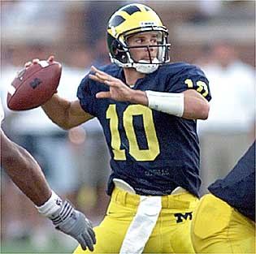

Before being drafted by New England Tom Had to fight for a starting spot on the roster for The Michigan Wolverines

While in College being a star didn't come as easily as it does now for Brady. Tom Brady was a backup for most of his college career for Players like Brian Griese and Drew Henson.
Brady posted a 20-5 record in college with wins in the Orange Bowl and the citrus Bowl
 Homepage
Homepage